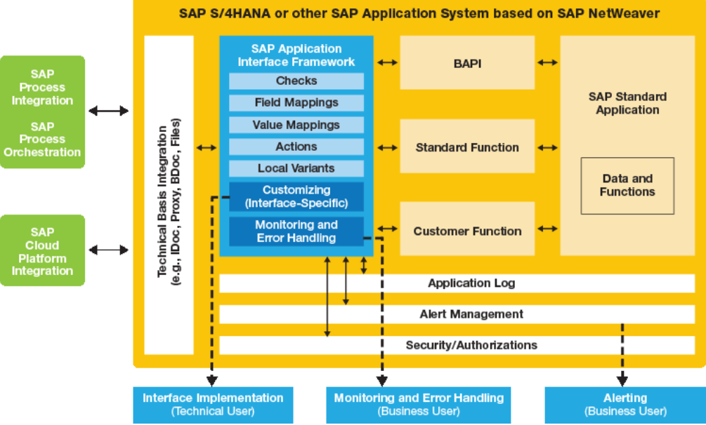

Application Interface Framework
### Agenda * Overview and Core Components * Why AIF? * Benefits for IT, Business and Management * AIF processing * Demo * AIF features
Overview and Core Components
* A powerful framework for interface implementation, monitoring and error handling * A proven solution with approx. eight years of development and customer history * A cross-industry solution with customers from 16 industries

Interface Implementation
* Interface implementation mainly through Customizing menus * Easy access to relevant data or functions of underlying SAP application * Re-use of interface components (e.g. checks, mappings, actions) * Independent implementation and testing of interface components and interface variants
Monitoring and Error-Handling
* Business user monitoring (power user) * Customizable authorizations for interface access * Overview of interface status
Benefits for IT, Business and Management
### Benefits for the IT * Fast implementation of Interfaces * Re-use of components in multiple interfaces * Allows versioning of interfaces * Unification of required skills
### Benefits for the Business * User-friendly Interface Information * Capabilities for mass error handling * Ability to correct errors within their system on User Friendly Screens
### Benefits for the Management * Interfaces with significantly reduced implementation costs * Efficient Interface Monitoring leads to reduced monitoring costs
AIF processing
Demo
AIF features
* Automatic reprocessing * SAP HANA ready * Serialization * OData Support * Analyzer * DSGVO (AIF 4.0)
Thank You!